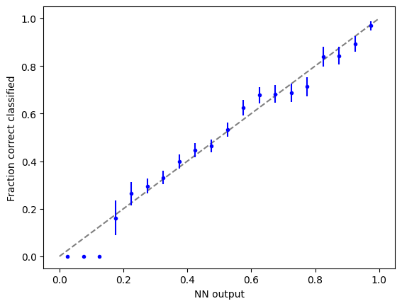
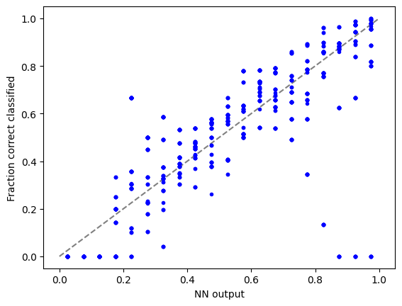
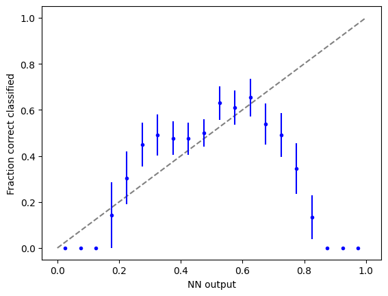

import torch
import torch.nn as nn
import torch.nn.functional as F
import torch.optim as optim
from torchvision import datasets, transforms
from torch.optim.lr_scheduler import StepLR
import numpy as np
import matplotlib.pyplot as plt
import easydictLoad datasets
import deeplake
dstrain = deeplake.load("hub://activeloop/cifar10-train")
dstest = deeplake.load("hub://activeloop/cifar10-test")-Opening dataset in read-only mode as you don't have write permissions.-This dataset can be visualized in Jupyter Notebook by ds.visualize() or at https://app.activeloop.ai/activeloop/cifar10-train
|hub://activeloop/cifar10-train loaded successfully.
-Opening dataset in read-only mode as you don't have write permissions.-This dataset can be visualized in Jupyter Notebook by ds.visualize() or at https://app.activeloop.ai/activeloop/cifar10-test
|hub://activeloop/cifar10-test loaded successfully.
Define NN
class Net(nn.Module):
def __init__(self):
super(Net, self).__init__()
self.conv1 = nn.Conv2d(3, 32, 3, 1)
self.conv2 = nn.Conv2d(32, 64, 3, 1)
self.conv3 = nn.Conv2d(64, 64, 3, 1)
self.dropout1 = nn.Dropout(0.25)
self.dropout2 = nn.Dropout(0.5)
self.fc1 = nn.Linear(2304, 1024)
self.fc2 = nn.Linear(1024,1024)
self.fc3 = nn.Linear(1024,1024)
self.fc4 = nn.Linear(1024,128)
self.fc5 = nn.Linear(128, 10)
def forward(self, x):
x = self.conv1(x)
x = F.relu(x)
x = self.conv2(x)
x = F.relu(x)
x = F.max_pool2d(x, 2)
x = self.dropout1(x)
x = self.conv3(x)
x = F.relu(x)
x = F.max_pool2d(x, 2)
x = self.dropout1(x)
x = torch.flatten(x, 1)
x = self.fc1(x)
x = F.relu(x)
x = self.dropout2(x)
x = self.fc2(x)
x = F.relu(x)
x = self.dropout2(x)
x = self.fc3(x)
x = F.relu(x)
x = self.dropout2(x)
x = self.fc4(x)
x = F.relu(x)
x = self.dropout2(x)
x = self.fc5(x)
output = F.log_softmax(x, dim=1)
return outputTrain NN
def train(args, model, device, train_loader, optimizer, epoch):
model.train()
for batch_idx, data in enumerate(train_loader):
target = data.popitem()[1].squeeze()
images = data.popitem()[1]
images, target = images.to(device), target.to(device)
optimizer.zero_grad()
output = model(images)
loss = F.nll_loss(output, target)
loss.backward()
optimizer.step()
if batch_idx % args.log_interval == 0:
print('Train Epoch: {} [{}/{} ({:.0f}%)]\tLoss: {:.6f}'.format(
epoch, batch_idx * len(images), len(train_loader.dataset),
100. * batch_idx / len(train_loader), loss.item()))
if args.dry_run:
break
def test(model, device, test_loader):
model.eval()
test_loss = 0
correct = 0
with torch.no_grad():
for data in test_loader:
target = data.popitem()[1].squeeze()
images = data.popitem()[1]
images, target = images.to(device), target.to(device)
output = model(images)
test_loss += F.nll_loss(output, target, reduction='sum').item() # sum up batch loss
pred = output.argmax(dim=1, keepdim=True) # get the index of the max log-probability
correct += pred.eq(target.view_as(pred)).sum().item()
test_loss /= len(test_loader.dataset)
print('\nTest set: Average loss: {:.4f}, Accuracy: {}/{} ({:.0f}%)\n'.format(
test_loss, correct, len(test_loader.dataset),
100. * correct / len(test_loader.dataset)))# Training settings
args = easydict.EasyDict({
"batch_size": 64,
"test_batch_size": 10000,
"train_steps": 1000,
"no_cuda": False,
"no_mps": True,
"seed": 1,
"lr": 1.0,
"gamma": 0.7,
"epochs": 10,
"dry_run": False,
"log_interval": 10,
"save_model": False
})
use_cuda = not args.no_cuda and torch.cuda.is_available()
use_mps = not args.no_mps and torch.backends.mps.is_available()
torch.manual_seed(args.seed)
if use_cuda:
device = torch.device("cuda")
elif use_mps:
device = torch.device("mps")
else:
device = torch.device("cpu")
train_kwargs = {'batch_size': args.batch_size}
test_kwargs = {'batch_size': args.test_batch_size}
if use_cuda:
cuda_kwargs = {'num_workers': 1,
'pin_memory': True,
'shuffle': True}
train_kwargs.update(cuda_kwargs)
test_kwargs.update(cuda_kwargs)
tform = transforms.Compose([
transforms.ToPILImage(), # Must convert to PIL image for subsequent operations to run
transforms.RandomRotation(20), # Image augmentation
transforms.ToTensor(), # Must convert to pytorch tensor for subsequent operations to run
transforms.Normalize([0.5, 0.5, 0.5], [0.5, 0.5, 0.5]),
])
#PyTorch Dataloader
train_loader= dstrain.pytorch(batch_size = args.batch_size, num_workers = 1, transform = {'images': tform, 'labels': None}, shuffle = False)
test_loader= dstest.pytorch(batch_size = args.test_batch_size, num_workers = 1, transform = {'images': tform, 'labels': None}, shuffle = False)
model = Net().to(device)
optimizer = optim.Adadelta(model.parameters(), lr=args.lr)
scheduler = StepLR(optimizer, step_size=1, gamma=args.gamma)
for epoch in range(1, args.epochs + 1):
train(args, model, device, train_loader, optimizer, epoch)
test(model, device, test_loader)
scheduler.step()
if args.save_model:
torch.save(model.state_dict(), "cifar10.pt")Train Epoch: 1 [0/50000 (0%)] Loss: 2.299033
Train Epoch: 1 [640/50000 (1%)] Loss: 2.303889
Train Epoch: 1 [1280/50000 (3%)] Loss: 2.308118
Train Epoch: 1 [1920/50000 (4%)] Loss: 2.312389
Train Epoch: 1 [2560/50000 (5%)] Loss: 2.302838
Train Epoch: 1 [3200/50000 (6%)] Loss: 2.296953
Train Epoch: 1 [3840/50000 (8%)] Loss: 2.299604
Train Epoch: 1 [4480/50000 (9%)] Loss: 2.304897
Train Epoch: 1 [5120/50000 (10%)] Loss: 2.297227
Train Epoch: 1 [5760/50000 (12%)] Loss: 2.296734
Train Epoch: 1 [6400/50000 (13%)] Loss: 2.265980
Train Epoch: 1 [7040/50000 (14%)] Loss: 2.220708
Train Epoch: 1 [7680/50000 (15%)] Loss: 2.342525
Train Epoch: 1 [8320/50000 (17%)] Loss: 2.238888
Train Epoch: 1 [8960/50000 (18%)] Loss: 2.279045
Train Epoch: 1 [9600/50000 (19%)] Loss: 2.155091
Train Epoch: 1 [10240/50000 (20%)] Loss: 2.170425
Train Epoch: 1 [10880/50000 (22%)] Loss: 2.141228
Train Epoch: 1 [11520/50000 (23%)] Loss: 2.107086
Train Epoch: 1 [12160/50000 (24%)] Loss: 2.003318
Train Epoch: 1 [12800/50000 (26%)] Loss: 2.085215
Train Epoch: 1 [13440/50000 (27%)] Loss: 2.026434
Train Epoch: 1 [14080/50000 (28%)] Loss: 2.185764
Train Epoch: 1 [14720/50000 (29%)] Loss: 2.122334
Train Epoch: 1 [15360/50000 (31%)] Loss: 2.199583
Train Epoch: 1 [16000/50000 (32%)] Loss: 2.027565
Train Epoch: 1 [16640/50000 (33%)] Loss: 2.101466
Train Epoch: 1 [17280/50000 (35%)] Loss: 2.239855
Train Epoch: 1 [17920/50000 (36%)] Loss: 2.076789
Train Epoch: 1 [18560/50000 (37%)] Loss: 2.004260
Train Epoch: 1 [19200/50000 (38%)] Loss: 2.229643
Train Epoch: 1 [19840/50000 (40%)] Loss: 2.188175
Train Epoch: 1 [20480/50000 (41%)] Loss: 2.034968
Train Epoch: 1 [21120/50000 (42%)] Loss: 2.032841
Train Epoch: 1 [21760/50000 (43%)] Loss: 1.954045
Train Epoch: 1 [22400/50000 (45%)] Loss: 1.978926
Train Epoch: 1 [23040/50000 (46%)] Loss: 2.012549
Train Epoch: 1 [23680/50000 (47%)] Loss: 2.068308
Train Epoch: 1 [24320/50000 (49%)] Loss: 2.040146
Train Epoch: 1 [24960/50000 (50%)] Loss: 1.985083
Train Epoch: 1 [25600/50000 (51%)] Loss: 2.008531
Train Epoch: 1 [26240/50000 (52%)] Loss: 2.151628
Train Epoch: 1 [26880/50000 (54%)] Loss: 1.935637
Train Epoch: 1 [27520/50000 (55%)] Loss: 1.922946
Train Epoch: 1 [28160/50000 (56%)] Loss: 1.986592
Train Epoch: 1 [28800/50000 (58%)] Loss: 1.860244
Train Epoch: 1 [29440/50000 (59%)] Loss: 2.158486
Train Epoch: 1 [30080/50000 (60%)] Loss: 1.884465
Train Epoch: 1 [30720/50000 (61%)] Loss: 1.866527
Train Epoch: 1 [31360/50000 (63%)] Loss: 2.128079
Train Epoch: 1 [32000/50000 (64%)] Loss: 1.801467
Train Epoch: 1 [32640/50000 (65%)] Loss: 1.962740
Train Epoch: 1 [33280/50000 (66%)] Loss: 2.146917
Train Epoch: 1 [33920/50000 (68%)] Loss: 2.117172
Train Epoch: 1 [34560/50000 (69%)] Loss: 1.857070
Train Epoch: 1 [35200/50000 (70%)] Loss: 1.847616
Train Epoch: 1 [35840/50000 (72%)] Loss: 1.858108
Train Epoch: 1 [36480/50000 (73%)] Loss: 1.725335
Train Epoch: 1 [37120/50000 (74%)] Loss: 1.992391
Train Epoch: 1 [37760/50000 (75%)] Loss: 1.961567
Train Epoch: 1 [38400/50000 (77%)] Loss: 1.772390
Train Epoch: 1 [39040/50000 (78%)] Loss: 1.833312
Train Epoch: 1 [39680/50000 (79%)] Loss: 1.739722
Train Epoch: 1 [40320/50000 (81%)] Loss: 1.898014
Train Epoch: 1 [40960/50000 (82%)] Loss: 1.815532
Train Epoch: 1 [41600/50000 (83%)] Loss: 1.729241
Train Epoch: 1 [42240/50000 (84%)] Loss: 1.777110
Train Epoch: 1 [42880/50000 (86%)] Loss: 1.873775
Train Epoch: 1 [43520/50000 (87%)] Loss: 1.792822
Train Epoch: 1 [44160/50000 (88%)] Loss: 1.748802
Train Epoch: 1 [44800/50000 (90%)] Loss: 1.704269
Train Epoch: 1 [45440/50000 (91%)] Loss: 1.626023
Train Epoch: 1 [46080/50000 (92%)] Loss: 2.233478
Train Epoch: 1 [46720/50000 (93%)] Loss: 1.684384
Train Epoch: 1 [47360/50000 (95%)] Loss: 1.719692
Train Epoch: 1 [48000/50000 (96%)] Loss: 1.996152
Train Epoch: 1 [48640/50000 (97%)] Loss: 1.713133
Train Epoch: 1 [49280/50000 (98%)] Loss: 1.779180
Train Epoch: 1 [49920/50000 (100%)] Loss: 1.612556
Test set: Average loss: 1.9036, Accuracy: 3021/10000 (30%)
Train Epoch: 2 [0/50000 (0%)] Loss: 1.934101
Train Epoch: 2 [640/50000 (1%)] Loss: 1.782667
Train Epoch: 2 [1280/50000 (3%)] Loss: 1.676120
Train Epoch: 2 [1920/50000 (4%)] Loss: 1.736266
Train Epoch: 2 [2560/50000 (5%)] Loss: 1.679253
Train Epoch: 2 [3200/50000 (6%)] Loss: 1.826791
Train Epoch: 2 [3840/50000 (8%)] Loss: 1.713279
Train Epoch: 2 [4480/50000 (9%)] Loss: 1.904016
Train Epoch: 2 [5120/50000 (10%)] Loss: 1.790307
Train Epoch: 2 [5760/50000 (12%)] Loss: 1.531643
Train Epoch: 2 [6400/50000 (13%)] Loss: 1.712876
Train Epoch: 2 [7040/50000 (14%)] Loss: 1.686580
Train Epoch: 2 [7680/50000 (15%)] Loss: 1.670998
Train Epoch: 2 [8320/50000 (17%)] Loss: 1.627729
Train Epoch: 2 [8960/50000 (18%)] Loss: 1.734960
Train Epoch: 2 [9600/50000 (19%)] Loss: 1.771612
Train Epoch: 2 [10240/50000 (20%)] Loss: 1.716622
Train Epoch: 2 [10880/50000 (22%)] Loss: 1.711901
Train Epoch: 2 [11520/50000 (23%)] Loss: 1.520605
Train Epoch: 2 [12160/50000 (24%)] Loss: 1.423691
Train Epoch: 2 [12800/50000 (26%)] Loss: 1.322480
Train Epoch: 2 [13440/50000 (27%)] Loss: 1.406436
Train Epoch: 2 [14080/50000 (28%)] Loss: 1.829000
Train Epoch: 2 [14720/50000 (29%)] Loss: 1.710202
Train Epoch: 2 [15360/50000 (31%)] Loss: 1.594285
Train Epoch: 2 [16000/50000 (32%)] Loss: 1.607455
Train Epoch: 2 [16640/50000 (33%)] Loss: 1.478501
Train Epoch: 2 [17280/50000 (35%)] Loss: 1.442203
Train Epoch: 2 [17920/50000 (36%)] Loss: 1.612444
Train Epoch: 2 [18560/50000 (37%)] Loss: 1.792624
Train Epoch: 2 [19200/50000 (38%)] Loss: 1.528386
Train Epoch: 2 [19840/50000 (40%)] Loss: 1.491064
Train Epoch: 2 [20480/50000 (41%)] Loss: 1.574350
Train Epoch: 2 [21120/50000 (42%)] Loss: 1.462339
Train Epoch: 2 [21760/50000 (43%)] Loss: 1.560784
Train Epoch: 2 [22400/50000 (45%)] Loss: 1.555578
Train Epoch: 2 [23040/50000 (46%)] Loss: 1.585137
Train Epoch: 2 [23680/50000 (47%)] Loss: 1.190117
Train Epoch: 2 [24320/50000 (49%)] Loss: 1.414209
Train Epoch: 2 [24960/50000 (50%)] Loss: 1.618163
Train Epoch: 2 [25600/50000 (51%)] Loss: 1.527519
Train Epoch: 2 [26240/50000 (52%)] Loss: 1.726170
Train Epoch: 2 [26880/50000 (54%)] Loss: 1.593740
Train Epoch: 2 [27520/50000 (55%)] Loss: 1.513525
Train Epoch: 2 [28160/50000 (56%)] Loss: 1.453733
Train Epoch: 2 [28800/50000 (58%)] Loss: 1.494444
Train Epoch: 2 [29440/50000 (59%)] Loss: 1.523008
Train Epoch: 2 [30080/50000 (60%)] Loss: 1.516954
Train Epoch: 2 [30720/50000 (61%)] Loss: 1.555048
Train Epoch: 2 [31360/50000 (63%)] Loss: 1.892253
Train Epoch: 2 [32000/50000 (64%)] Loss: 1.697904
Train Epoch: 2 [32640/50000 (65%)] Loss: 1.451395
Train Epoch: 2 [33280/50000 (66%)] Loss: 1.661984
Train Epoch: 2 [33920/50000 (68%)] Loss: 1.653472
Train Epoch: 2 [34560/50000 (69%)] Loss: 1.363226
Train Epoch: 2 [35200/50000 (70%)] Loss: 1.421380
Train Epoch: 2 [35840/50000 (72%)] Loss: 1.572304
Train Epoch: 2 [36480/50000 (73%)] Loss: 1.308362
Train Epoch: 2 [37120/50000 (74%)] Loss: 1.604902
Train Epoch: 2 [37760/50000 (75%)] Loss: 1.648350
Train Epoch: 2 [38400/50000 (77%)] Loss: 1.456430
Train Epoch: 2 [39040/50000 (78%)] Loss: 1.511892
Train Epoch: 2 [39680/50000 (79%)] Loss: 1.515520
Train Epoch: 2 [40320/50000 (81%)] Loss: 1.433651
Train Epoch: 2 [40960/50000 (82%)] Loss: 1.640552
Train Epoch: 2 [41600/50000 (83%)] Loss: 1.339220
Train Epoch: 2 [42240/50000 (84%)] Loss: 1.378478
Train Epoch: 2 [42880/50000 (86%)] Loss: 1.558012
Train Epoch: 2 [43520/50000 (87%)] Loss: 1.627027
Train Epoch: 2 [44160/50000 (88%)] Loss: 1.631302
Train Epoch: 2 [44800/50000 (90%)] Loss: 1.482510
Train Epoch: 2 [45440/50000 (91%)] Loss: 1.438359
Train Epoch: 2 [46080/50000 (92%)] Loss: 1.457844
Train Epoch: 2 [46720/50000 (93%)] Loss: 1.363492
Train Epoch: 2 [47360/50000 (95%)] Loss: 1.438638
Train Epoch: 2 [48000/50000 (96%)] Loss: 1.881205
Train Epoch: 2 [48640/50000 (97%)] Loss: 1.406252
Train Epoch: 2 [49280/50000 (98%)] Loss: 1.451368
Train Epoch: 2 [49920/50000 (100%)] Loss: 1.554054
Test set: Average loss: 1.3941, Accuracy: 4950/10000 (50%)
Train Epoch: 3 [0/50000 (0%)] Loss: 1.466548
Train Epoch: 3 [640/50000 (1%)] Loss: 1.537474
Train Epoch: 3 [1280/50000 (3%)] Loss: 1.476710
Train Epoch: 3 [1920/50000 (4%)] Loss: 1.505977
Train Epoch: 3 [2560/50000 (5%)] Loss: 1.378123
Train Epoch: 3 [3200/50000 (6%)] Loss: 1.609165
Train Epoch: 3 [3840/50000 (8%)] Loss: 1.521932
Train Epoch: 3 [4480/50000 (9%)] Loss: 1.733598
Train Epoch: 3 [5120/50000 (10%)] Loss: 1.526056
Train Epoch: 3 [5760/50000 (12%)] Loss: 1.386495
Train Epoch: 3 [6400/50000 (13%)] Loss: 1.378711
Train Epoch: 3 [7040/50000 (14%)] Loss: 1.457283
Train Epoch: 3 [7680/50000 (15%)] Loss: 1.559397
Train Epoch: 3 [8320/50000 (17%)] Loss: 1.406867
Train Epoch: 3 [8960/50000 (18%)] Loss: 1.581707
Train Epoch: 3 [9600/50000 (19%)] Loss: 1.484482
Train Epoch: 3 [10240/50000 (20%)] Loss: 1.573639
Train Epoch: 3 [10880/50000 (22%)] Loss: 1.434314
Train Epoch: 3 [11520/50000 (23%)] Loss: 1.299928
Train Epoch: 3 [12160/50000 (24%)] Loss: 1.107314
Train Epoch: 3 [12800/50000 (26%)] Loss: 1.157712
Train Epoch: 3 [13440/50000 (27%)] Loss: 1.093410
Train Epoch: 3 [14080/50000 (28%)] Loss: 1.322993
Train Epoch: 3 [14720/50000 (29%)] Loss: 1.288600
Train Epoch: 3 [15360/50000 (31%)] Loss: 1.542158
Train Epoch: 3 [16000/50000 (32%)] Loss: 1.393947
Train Epoch: 3 [16640/50000 (33%)] Loss: 1.316692
Train Epoch: 3 [17280/50000 (35%)] Loss: 1.686596
Train Epoch: 3 [17920/50000 (36%)] Loss: 1.498981
Train Epoch: 3 [18560/50000 (37%)] Loss: 1.318353
Train Epoch: 3 [19200/50000 (38%)] Loss: 1.357406
Train Epoch: 3 [19840/50000 (40%)] Loss: 1.330026
Train Epoch: 3 [20480/50000 (41%)] Loss: 1.716183
Train Epoch: 3 [21120/50000 (42%)] Loss: 1.319123
Train Epoch: 3 [21760/50000 (43%)] Loss: 1.510213
Train Epoch: 3 [22400/50000 (45%)] Loss: 1.336684
Train Epoch: 3 [23040/50000 (46%)] Loss: 1.448501
Train Epoch: 3 [23680/50000 (47%)] Loss: 1.091779
Train Epoch: 3 [24320/50000 (49%)] Loss: 1.258848
Train Epoch: 3 [24960/50000 (50%)] Loss: 1.219555
Train Epoch: 3 [25600/50000 (51%)] Loss: 1.354512
Train Epoch: 3 [26240/50000 (52%)] Loss: 1.526818
Train Epoch: 3 [26880/50000 (54%)] Loss: 1.749437
Train Epoch: 3 [27520/50000 (55%)] Loss: 1.400402
Train Epoch: 3 [28160/50000 (56%)] Loss: 1.240622
Train Epoch: 3 [28800/50000 (58%)] Loss: 1.045187
Train Epoch: 3 [29440/50000 (59%)] Loss: 1.259182
Train Epoch: 3 [30080/50000 (60%)] Loss: 1.221227
Train Epoch: 3 [30720/50000 (61%)] Loss: 1.617322
Train Epoch: 3 [31360/50000 (63%)] Loss: 1.701307
Train Epoch: 3 [32000/50000 (64%)] Loss: 1.489313
Train Epoch: 3 [32640/50000 (65%)] Loss: 1.271191
Train Epoch: 3 [33280/50000 (66%)] Loss: 1.433877
Train Epoch: 3 [33920/50000 (68%)] Loss: 1.474660
Train Epoch: 3 [34560/50000 (69%)] Loss: 1.379254
Train Epoch: 3 [35200/50000 (70%)] Loss: 1.125616
Train Epoch: 3 [35840/50000 (72%)] Loss: 1.437044
Train Epoch: 3 [36480/50000 (73%)] Loss: 1.156781
Train Epoch: 3 [37120/50000 (74%)] Loss: 1.315462
Train Epoch: 3 [37760/50000 (75%)] Loss: 1.482688
Train Epoch: 3 [38400/50000 (77%)] Loss: 1.472923
Train Epoch: 3 [39040/50000 (78%)] Loss: 1.258362
Train Epoch: 3 [39680/50000 (79%)] Loss: 1.213249
Train Epoch: 3 [40320/50000 (81%)] Loss: 1.223587
Train Epoch: 3 [40960/50000 (82%)] Loss: 1.508503
Train Epoch: 3 [41600/50000 (83%)] Loss: 1.243866
Train Epoch: 3 [42240/50000 (84%)] Loss: 1.154865
Train Epoch: 3 [42880/50000 (86%)] Loss: 1.370504
Train Epoch: 3 [43520/50000 (87%)] Loss: 1.451500
Train Epoch: 3 [44160/50000 (88%)] Loss: 1.389682
Train Epoch: 3 [44800/50000 (90%)] Loss: 1.350556
Train Epoch: 3 [45440/50000 (91%)] Loss: 1.150078
Train Epoch: 3 [46080/50000 (92%)] Loss: 1.202138
Train Epoch: 3 [46720/50000 (93%)] Loss: 1.063961
Train Epoch: 3 [47360/50000 (95%)] Loss: 1.181561
Train Epoch: 3 [48000/50000 (96%)] Loss: 1.675499
Train Epoch: 3 [48640/50000 (97%)] Loss: 1.166350
Train Epoch: 3 [49280/50000 (98%)] Loss: 1.481082
Train Epoch: 3 [49920/50000 (100%)] Loss: 1.375093
Test set: Average loss: 1.1799, Accuracy: 5744/10000 (57%)
Train Epoch: 4 [0/50000 (0%)] Loss: 1.127280
Train Epoch: 4 [640/50000 (1%)] Loss: 1.488658
Train Epoch: 4 [1280/50000 (3%)] Loss: 1.494190
Train Epoch: 4 [1920/50000 (4%)] Loss: 1.482981
Train Epoch: 4 [2560/50000 (5%)] Loss: 1.198666
Train Epoch: 4 [3200/50000 (6%)] Loss: 1.049265
Train Epoch: 4 [3840/50000 (8%)] Loss: 1.358242
Train Epoch: 4 [4480/50000 (9%)] Loss: 1.792589
Train Epoch: 4 [5120/50000 (10%)] Loss: 1.471855
Train Epoch: 4 [5760/50000 (12%)] Loss: 1.138769
Train Epoch: 4 [6400/50000 (13%)] Loss: 1.175843
Train Epoch: 4 [7040/50000 (14%)] Loss: 1.359050
Train Epoch: 4 [7680/50000 (15%)] Loss: 1.469956
Train Epoch: 4 [8320/50000 (17%)] Loss: 1.311093
Train Epoch: 4 [8960/50000 (18%)] Loss: 1.268491
Train Epoch: 4 [9600/50000 (19%)] Loss: 1.463435
Train Epoch: 4 [10240/50000 (20%)] Loss: 1.269141
Train Epoch: 4 [10880/50000 (22%)] Loss: 1.319140
Train Epoch: 4 [11520/50000 (23%)] Loss: 1.044267
Train Epoch: 4 [12160/50000 (24%)] Loss: 1.103219
Train Epoch: 4 [12800/50000 (26%)] Loss: 0.984589
Train Epoch: 4 [13440/50000 (27%)] Loss: 0.941663
Train Epoch: 4 [14080/50000 (28%)] Loss: 1.266109
Train Epoch: 4 [14720/50000 (29%)] Loss: 1.017648
Train Epoch: 4 [15360/50000 (31%)] Loss: 1.286856
Train Epoch: 4 [16000/50000 (32%)] Loss: 1.134981
Train Epoch: 4 [16640/50000 (33%)] Loss: 1.269880
Train Epoch: 4 [17280/50000 (35%)] Loss: 1.337629
Train Epoch: 4 [17920/50000 (36%)] Loss: 1.130052
Train Epoch: 4 [18560/50000 (37%)] Loss: 1.380085
Train Epoch: 4 [19200/50000 (38%)] Loss: 1.247738
Train Epoch: 4 [19840/50000 (40%)] Loss: 1.306324
Train Epoch: 4 [20480/50000 (41%)] Loss: 1.370153
Train Epoch: 4 [21120/50000 (42%)] Loss: 1.060614
Train Epoch: 4 [21760/50000 (43%)] Loss: 1.273242
Train Epoch: 4 [22400/50000 (45%)] Loss: 1.208855
Train Epoch: 4 [23040/50000 (46%)] Loss: 1.335672
Train Epoch: 4 [23680/50000 (47%)] Loss: 0.844763
Train Epoch: 4 [24320/50000 (49%)] Loss: 1.216790
Train Epoch: 4 [24960/50000 (50%)] Loss: 1.082202
Train Epoch: 4 [25600/50000 (51%)] Loss: 1.116757
Train Epoch: 4 [26240/50000 (52%)] Loss: 1.310508
Train Epoch: 4 [26880/50000 (54%)] Loss: 1.290441
Train Epoch: 4 [27520/50000 (55%)] Loss: 1.303176
Train Epoch: 4 [28160/50000 (56%)] Loss: 1.231951
Train Epoch: 4 [28800/50000 (58%)] Loss: 0.946190
Train Epoch: 4 [29440/50000 (59%)] Loss: 1.129601
Train Epoch: 4 [30080/50000 (60%)] Loss: 1.093612
Train Epoch: 4 [30720/50000 (61%)] Loss: 1.445060
Train Epoch: 4 [31360/50000 (63%)] Loss: 1.261074
Train Epoch: 4 [32000/50000 (64%)] Loss: 1.542784
Train Epoch: 4 [32640/50000 (65%)] Loss: 1.237961
Train Epoch: 4 [33280/50000 (66%)] Loss: 1.264429
Train Epoch: 4 [33920/50000 (68%)] Loss: 1.279511
Train Epoch: 4 [34560/50000 (69%)] Loss: 1.339928
Train Epoch: 4 [35200/50000 (70%)] Loss: 1.087411
Train Epoch: 4 [35840/50000 (72%)] Loss: 1.238827
Train Epoch: 4 [36480/50000 (73%)] Loss: 1.049090
Train Epoch: 4 [37120/50000 (74%)] Loss: 1.259084
Train Epoch: 4 [37760/50000 (75%)] Loss: 1.295464
Train Epoch: 4 [38400/50000 (77%)] Loss: 1.229219
Train Epoch: 4 [39040/50000 (78%)] Loss: 1.129971
Train Epoch: 4 [39680/50000 (79%)] Loss: 1.354318
Train Epoch: 4 [40320/50000 (81%)] Loss: 1.077360
Train Epoch: 4 [40960/50000 (82%)] Loss: 1.486759
Train Epoch: 4 [41600/50000 (83%)] Loss: 1.114787
Train Epoch: 4 [42240/50000 (84%)] Loss: 1.176926
Train Epoch: 4 [42880/50000 (86%)] Loss: 1.290414
Train Epoch: 4 [43520/50000 (87%)] Loss: 1.420830
Train Epoch: 4 [44160/50000 (88%)] Loss: 1.394679
Train Epoch: 4 [44800/50000 (90%)] Loss: 1.192866
Train Epoch: 4 [45440/50000 (91%)] Loss: 1.074428
Train Epoch: 4 [46080/50000 (92%)] Loss: 0.953859
Train Epoch: 4 [46720/50000 (93%)] Loss: 1.080647
Train Epoch: 4 [47360/50000 (95%)] Loss: 1.118722
Train Epoch: 4 [48000/50000 (96%)] Loss: 1.286427
Train Epoch: 4 [48640/50000 (97%)] Loss: 1.179104
Train Epoch: 4 [49280/50000 (98%)] Loss: 1.117878
Train Epoch: 4 [49920/50000 (100%)] Loss: 1.363855
Test set: Average loss: 1.0782, Accuracy: 6249/10000 (62%)
Train Epoch: 5 [0/50000 (0%)] Loss: 1.189859
Train Epoch: 5 [640/50000 (1%)] Loss: 1.497187
Train Epoch: 5 [1280/50000 (3%)] Loss: 1.272417
Train Epoch: 5 [1920/50000 (4%)] Loss: 1.318508
Train Epoch: 5 [2560/50000 (5%)] Loss: 0.859988
Train Epoch: 5 [3200/50000 (6%)] Loss: 1.004791
Train Epoch: 5 [3840/50000 (8%)] Loss: 1.193111
Train Epoch: 5 [4480/50000 (9%)] Loss: 1.642434
Train Epoch: 5 [5120/50000 (10%)] Loss: 1.257364
Train Epoch: 5 [5760/50000 (12%)] Loss: 1.107964
Train Epoch: 5 [6400/50000 (13%)] Loss: 1.103902
Train Epoch: 5 [7040/50000 (14%)] Loss: 1.205545
Train Epoch: 5 [7680/50000 (15%)] Loss: 1.111433
Train Epoch: 5 [8320/50000 (17%)] Loss: 1.142003
Train Epoch: 5 [8960/50000 (18%)] Loss: 1.155255
Train Epoch: 5 [9600/50000 (19%)] Loss: 1.159671
Train Epoch: 5 [10240/50000 (20%)] Loss: 1.102437
Train Epoch: 5 [10880/50000 (22%)] Loss: 1.261423
Train Epoch: 5 [11520/50000 (23%)] Loss: 0.985407
Train Epoch: 5 [12160/50000 (24%)] Loss: 1.066312
Train Epoch: 5 [12800/50000 (26%)] Loss: 0.848822
Train Epoch: 5 [13440/50000 (27%)] Loss: 0.776965
Train Epoch: 5 [14080/50000 (28%)] Loss: 1.099129
Train Epoch: 5 [14720/50000 (29%)] Loss: 1.206801
Train Epoch: 5 [15360/50000 (31%)] Loss: 1.582550
Train Epoch: 5 [16000/50000 (32%)] Loss: 1.142168
Train Epoch: 5 [16640/50000 (33%)] Loss: 1.098418
Train Epoch: 5 [17280/50000 (35%)] Loss: 0.992262
Train Epoch: 5 [17920/50000 (36%)] Loss: 1.222448
Train Epoch: 5 [18560/50000 (37%)] Loss: 1.102681
Train Epoch: 5 [19200/50000 (38%)] Loss: 1.116597
Train Epoch: 5 [19840/50000 (40%)] Loss: 1.020688
Train Epoch: 5 [20480/50000 (41%)] Loss: 1.337971
Train Epoch: 5 [21120/50000 (42%)] Loss: 0.876690
Train Epoch: 5 [21760/50000 (43%)] Loss: 1.454129
Train Epoch: 5 [22400/50000 (45%)] Loss: 1.082111
Train Epoch: 5 [23040/50000 (46%)] Loss: 1.200456
Train Epoch: 5 [23680/50000 (47%)] Loss: 0.789405
Train Epoch: 5 [24320/50000 (49%)] Loss: 1.154787
Train Epoch: 5 [24960/50000 (50%)] Loss: 1.008365
Train Epoch: 5 [25600/50000 (51%)] Loss: 1.100433
Train Epoch: 5 [26240/50000 (52%)] Loss: 1.124826
Train Epoch: 5 [26880/50000 (54%)] Loss: 1.209510
Train Epoch: 5 [27520/50000 (55%)] Loss: 1.264730
Train Epoch: 5 [28160/50000 (56%)] Loss: 1.311415
Train Epoch: 5 [28800/50000 (58%)] Loss: 0.927007
Train Epoch: 5 [29440/50000 (59%)] Loss: 1.134358
Train Epoch: 5 [30080/50000 (60%)] Loss: 1.167760
Train Epoch: 5 [30720/50000 (61%)] Loss: 1.284857
Train Epoch: 5 [31360/50000 (63%)] Loss: 1.395585
Train Epoch: 5 [32000/50000 (64%)] Loss: 1.445236
Train Epoch: 5 [32640/50000 (65%)] Loss: 1.086601
Train Epoch: 5 [33280/50000 (66%)] Loss: 1.362525
Train Epoch: 5 [33920/50000 (68%)] Loss: 1.375440
Train Epoch: 5 [34560/50000 (69%)] Loss: 0.966080
Train Epoch: 5 [35200/50000 (70%)] Loss: 0.933115
Train Epoch: 5 [35840/50000 (72%)] Loss: 1.074304
Train Epoch: 5 [36480/50000 (73%)] Loss: 0.879907
Train Epoch: 5 [37120/50000 (74%)] Loss: 1.128837
Train Epoch: 5 [37760/50000 (75%)] Loss: 1.166971
Train Epoch: 5 [38400/50000 (77%)] Loss: 1.181557
Train Epoch: 5 [39040/50000 (78%)] Loss: 1.093470
Train Epoch: 5 [39680/50000 (79%)] Loss: 1.063838
Train Epoch: 5 [40320/50000 (81%)] Loss: 1.040119
Train Epoch: 5 [40960/50000 (82%)] Loss: 1.472398
Train Epoch: 5 [41600/50000 (83%)] Loss: 1.095876
Train Epoch: 5 [42240/50000 (84%)] Loss: 0.899388
Train Epoch: 5 [42880/50000 (86%)] Loss: 1.174426
Train Epoch: 5 [43520/50000 (87%)] Loss: 1.376526
Train Epoch: 5 [44160/50000 (88%)] Loss: 1.164064
Train Epoch: 5 [44800/50000 (90%)] Loss: 1.086376
Train Epoch: 5 [45440/50000 (91%)] Loss: 1.012160
Train Epoch: 5 [46080/50000 (92%)] Loss: 0.948831
Train Epoch: 5 [46720/50000 (93%)] Loss: 0.896119
Train Epoch: 5 [47360/50000 (95%)] Loss: 1.070601
Train Epoch: 5 [48000/50000 (96%)] Loss: 1.497373
Train Epoch: 5 [48640/50000 (97%)] Loss: 0.966221
Train Epoch: 5 [49280/50000 (98%)] Loss: 1.120756
Train Epoch: 5 [49920/50000 (100%)] Loss: 1.057853
Test set: Average loss: 1.0082, Accuracy: 6554/10000 (66%)
Train Epoch: 6 [0/50000 (0%)] Loss: 1.221478
Train Epoch: 6 [640/50000 (1%)] Loss: 1.313419
Train Epoch: 6 [1280/50000 (3%)] Loss: 1.118038
Train Epoch: 6 [1920/50000 (4%)] Loss: 1.354253
Train Epoch: 6 [2560/50000 (5%)] Loss: 0.854332
Train Epoch: 6 [3200/50000 (6%)] Loss: 0.955111
Train Epoch: 6 [3840/50000 (8%)] Loss: 1.157294
Train Epoch: 6 [4480/50000 (9%)] Loss: 1.404445
Train Epoch: 6 [5120/50000 (10%)] Loss: 1.143827
Train Epoch: 6 [5760/50000 (12%)] Loss: 1.148730
Train Epoch: 6 [6400/50000 (13%)] Loss: 1.067784
Train Epoch: 6 [7040/50000 (14%)] Loss: 1.115405
Train Epoch: 6 [7680/50000 (15%)] Loss: 1.156765
Train Epoch: 6 [8320/50000 (17%)] Loss: 1.022118
Train Epoch: 6 [8960/50000 (18%)] Loss: 1.367387
Train Epoch: 6 [9600/50000 (19%)] Loss: 1.081224
Train Epoch: 6 [10240/50000 (20%)] Loss: 1.158254
Train Epoch: 6 [10880/50000 (22%)] Loss: 1.236499
Train Epoch: 6 [11520/50000 (23%)] Loss: 0.908588
Train Epoch: 6 [12160/50000 (24%)] Loss: 0.965489
Train Epoch: 6 [12800/50000 (26%)] Loss: 0.848996
Train Epoch: 6 [13440/50000 (27%)] Loss: 0.899361
Train Epoch: 6 [14080/50000 (28%)] Loss: 1.166657
Train Epoch: 6 [14720/50000 (29%)] Loss: 0.992347
Train Epoch: 6 [15360/50000 (31%)] Loss: 1.208993
Train Epoch: 6 [16000/50000 (32%)] Loss: 0.951686
Train Epoch: 6 [16640/50000 (33%)] Loss: 1.211337
Train Epoch: 6 [17280/50000 (35%)] Loss: 1.085151
Train Epoch: 6 [17920/50000 (36%)] Loss: 1.176634
Train Epoch: 6 [18560/50000 (37%)] Loss: 0.918680
Train Epoch: 6 [19200/50000 (38%)] Loss: 1.056027
Train Epoch: 6 [19840/50000 (40%)] Loss: 1.151632
Train Epoch: 6 [20480/50000 (41%)] Loss: 1.130392
Train Epoch: 6 [21120/50000 (42%)] Loss: 0.831801
Train Epoch: 6 [21760/50000 (43%)] Loss: 1.118285
Train Epoch: 6 [22400/50000 (45%)] Loss: 1.135280
Train Epoch: 6 [23040/50000 (46%)] Loss: 1.099746
Train Epoch: 6 [23680/50000 (47%)] Loss: 0.710734
Train Epoch: 6 [24320/50000 (49%)] Loss: 1.062589
Train Epoch: 6 [24960/50000 (50%)] Loss: 0.736085
Train Epoch: 6 [25600/50000 (51%)] Loss: 1.140170
Train Epoch: 6 [26240/50000 (52%)] Loss: 1.101170
Train Epoch: 6 [26880/50000 (54%)] Loss: 1.146672
Train Epoch: 6 [27520/50000 (55%)] Loss: 1.331575
Train Epoch: 6 [28160/50000 (56%)] Loss: 1.082810
Train Epoch: 6 [28800/50000 (58%)] Loss: 0.928611
Train Epoch: 6 [29440/50000 (59%)] Loss: 1.151430
Train Epoch: 6 [30080/50000 (60%)] Loss: 1.041028
Train Epoch: 6 [30720/50000 (61%)] Loss: 1.390157
Train Epoch: 6 [31360/50000 (63%)] Loss: 1.145198
Train Epoch: 6 [32000/50000 (64%)] Loss: 1.227914
Train Epoch: 6 [32640/50000 (65%)] Loss: 1.087877
Train Epoch: 6 [33280/50000 (66%)] Loss: 1.097211
Train Epoch: 6 [33920/50000 (68%)] Loss: 1.085695
Train Epoch: 6 [34560/50000 (69%)] Loss: 0.963517
Train Epoch: 6 [35200/50000 (70%)] Loss: 0.839381
Train Epoch: 6 [35840/50000 (72%)] Loss: 0.856942
Train Epoch: 6 [36480/50000 (73%)] Loss: 1.013020
Train Epoch: 6 [37120/50000 (74%)] Loss: 1.399054
Train Epoch: 6 [37760/50000 (75%)] Loss: 1.147446
Train Epoch: 6 [38400/50000 (77%)] Loss: 1.025686
Train Epoch: 6 [39040/50000 (78%)] Loss: 1.051322
Train Epoch: 6 [39680/50000 (79%)] Loss: 1.134575
Train Epoch: 6 [40320/50000 (81%)] Loss: 1.121513
Train Epoch: 6 [40960/50000 (82%)] Loss: 1.062956
Train Epoch: 6 [41600/50000 (83%)] Loss: 0.981159
Train Epoch: 6 [42240/50000 (84%)] Loss: 0.894403
Train Epoch: 6 [42880/50000 (86%)] Loss: 1.242482
Train Epoch: 6 [43520/50000 (87%)] Loss: 1.367583
Train Epoch: 6 [44160/50000 (88%)] Loss: 1.128561
Train Epoch: 6 [44800/50000 (90%)] Loss: 1.119720
Train Epoch: 6 [45440/50000 (91%)] Loss: 1.075408
Train Epoch: 6 [46080/50000 (92%)] Loss: 0.877489
Train Epoch: 6 [46720/50000 (93%)] Loss: 0.705971
Train Epoch: 6 [47360/50000 (95%)] Loss: 0.860425
Train Epoch: 6 [48000/50000 (96%)] Loss: 1.476850
Train Epoch: 6 [48640/50000 (97%)] Loss: 0.893395
Train Epoch: 6 [49280/50000 (98%)] Loss: 1.078086
Train Epoch: 6 [49920/50000 (100%)] Loss: 0.988815
Test set: Average loss: 0.9682, Accuracy: 6687/10000 (67%)
Train Epoch: 7 [0/50000 (0%)] Loss: 1.116529
Train Epoch: 7 [640/50000 (1%)] Loss: 1.190192
Train Epoch: 7 [1280/50000 (3%)] Loss: 1.023177
Train Epoch: 7 [1920/50000 (4%)] Loss: 1.249869
Train Epoch: 7 [2560/50000 (5%)] Loss: 0.788746
Train Epoch: 7 [3200/50000 (6%)] Loss: 1.126593
Train Epoch: 7 [3840/50000 (8%)] Loss: 1.037527
Train Epoch: 7 [4480/50000 (9%)] Loss: 1.409196
Train Epoch: 7 [5120/50000 (10%)] Loss: 1.171091
Train Epoch: 7 [5760/50000 (12%)] Loss: 0.910539
Train Epoch: 7 [6400/50000 (13%)] Loss: 0.971159
Train Epoch: 7 [7040/50000 (14%)] Loss: 1.179431
Train Epoch: 7 [7680/50000 (15%)] Loss: 1.157975
Train Epoch: 7 [8320/50000 (17%)] Loss: 0.943646
Train Epoch: 7 [8960/50000 (18%)] Loss: 1.189414
Train Epoch: 7 [9600/50000 (19%)] Loss: 1.105275
Train Epoch: 7 [10240/50000 (20%)] Loss: 1.037167
Train Epoch: 7 [10880/50000 (22%)] Loss: 1.085347
Train Epoch: 7 [11520/50000 (23%)] Loss: 0.956653
Train Epoch: 7 [12160/50000 (24%)] Loss: 0.872999
Train Epoch: 7 [12800/50000 (26%)] Loss: 0.788169
Train Epoch: 7 [13440/50000 (27%)] Loss: 0.808129
Train Epoch: 7 [14080/50000 (28%)] Loss: 0.992657
Train Epoch: 7 [14720/50000 (29%)] Loss: 0.907288
Train Epoch: 7 [15360/50000 (31%)] Loss: 1.078081
Train Epoch: 7 [16000/50000 (32%)] Loss: 0.964103
Train Epoch: 7 [16640/50000 (33%)] Loss: 1.046421
Train Epoch: 7 [17280/50000 (35%)] Loss: 1.012911
Train Epoch: 7 [17920/50000 (36%)] Loss: 1.051356
Train Epoch: 7 [18560/50000 (37%)] Loss: 1.035910
Train Epoch: 7 [19200/50000 (38%)] Loss: 1.014593
Train Epoch: 7 [19840/50000 (40%)] Loss: 0.993365
Train Epoch: 7 [20480/50000 (41%)] Loss: 0.974669
Train Epoch: 7 [21120/50000 (42%)] Loss: 0.773555
Train Epoch: 7 [21760/50000 (43%)] Loss: 1.157406
Train Epoch: 7 [22400/50000 (45%)] Loss: 0.848513
Train Epoch: 7 [23040/50000 (46%)] Loss: 0.955565
Train Epoch: 7 [23680/50000 (47%)] Loss: 0.779282
Train Epoch: 7 [24320/50000 (49%)] Loss: 1.109859
Train Epoch: 7 [24960/50000 (50%)] Loss: 0.879445
Train Epoch: 7 [25600/50000 (51%)] Loss: 1.030559
Train Epoch: 7 [26240/50000 (52%)] Loss: 1.255325
Train Epoch: 7 [26880/50000 (54%)] Loss: 1.286723
Train Epoch: 7 [27520/50000 (55%)] Loss: 1.237304
Train Epoch: 7 [28160/50000 (56%)] Loss: 0.919517
Train Epoch: 7 [28800/50000 (58%)] Loss: 0.645850
Train Epoch: 7 [29440/50000 (59%)] Loss: 1.239589
Train Epoch: 7 [30080/50000 (60%)] Loss: 1.147845
Train Epoch: 7 [30720/50000 (61%)] Loss: 1.180093
Train Epoch: 7 [31360/50000 (63%)] Loss: 1.060579
Train Epoch: 7 [32000/50000 (64%)] Loss: 1.249122
Train Epoch: 7 [32640/50000 (65%)] Loss: 1.017547
Train Epoch: 7 [33280/50000 (66%)] Loss: 1.318754
Train Epoch: 7 [33920/50000 (68%)] Loss: 1.113904
Train Epoch: 7 [34560/50000 (69%)] Loss: 1.044607
Train Epoch: 7 [35200/50000 (70%)] Loss: 0.882385
Train Epoch: 7 [35840/50000 (72%)] Loss: 0.966240
Train Epoch: 7 [36480/50000 (73%)] Loss: 0.932670
Train Epoch: 7 [37120/50000 (74%)] Loss: 1.102950
Train Epoch: 7 [37760/50000 (75%)] Loss: 1.074252
Train Epoch: 7 [38400/50000 (77%)] Loss: 1.059711
Train Epoch: 7 [39040/50000 (78%)] Loss: 1.187588
Train Epoch: 7 [39680/50000 (79%)] Loss: 1.146346
Train Epoch: 7 [40320/50000 (81%)] Loss: 1.074561
Train Epoch: 7 [40960/50000 (82%)] Loss: 1.293255
Train Epoch: 7 [41600/50000 (83%)] Loss: 0.884034
Train Epoch: 7 [42240/50000 (84%)] Loss: 0.906789
Train Epoch: 7 [42880/50000 (86%)] Loss: 1.125658
Train Epoch: 7 [43520/50000 (87%)] Loss: 1.274901
Train Epoch: 7 [44160/50000 (88%)] Loss: 1.209480
Train Epoch: 7 [44800/50000 (90%)] Loss: 1.108895
Train Epoch: 7 [45440/50000 (91%)] Loss: 0.922414
Train Epoch: 7 [46080/50000 (92%)] Loss: 0.770961
Train Epoch: 7 [46720/50000 (93%)] Loss: 0.858013
Train Epoch: 7 [47360/50000 (95%)] Loss: 0.837034
Train Epoch: 7 [48000/50000 (96%)] Loss: 1.161719
Train Epoch: 7 [48640/50000 (97%)] Loss: 0.891929
Train Epoch: 7 [49280/50000 (98%)] Loss: 0.904379
Train Epoch: 7 [49920/50000 (100%)] Loss: 0.882372
Test set: Average loss: 0.9091, Accuracy: 6909/10000 (69%)
Train Epoch: 8 [0/50000 (0%)] Loss: 1.046593
Train Epoch: 8 [640/50000 (1%)] Loss: 1.180720
Train Epoch: 8 [1280/50000 (3%)] Loss: 1.114292
Train Epoch: 8 [1920/50000 (4%)] Loss: 1.178638
Train Epoch: 8 [2560/50000 (5%)] Loss: 0.778917
Train Epoch: 8 [3200/50000 (6%)] Loss: 1.085007
Train Epoch: 8 [3840/50000 (8%)] Loss: 1.048787
Train Epoch: 8 [4480/50000 (9%)] Loss: 1.311834
Train Epoch: 8 [5120/50000 (10%)] Loss: 1.141999
Train Epoch: 8 [5760/50000 (12%)] Loss: 0.783085
Train Epoch: 8 [6400/50000 (13%)] Loss: 0.962518
Train Epoch: 8 [7040/50000 (14%)] Loss: 1.050201
Train Epoch: 8 [7680/50000 (15%)] Loss: 0.993312
Train Epoch: 8 [8320/50000 (17%)] Loss: 0.873822
Train Epoch: 8 [8960/50000 (18%)] Loss: 1.181800
Train Epoch: 8 [9600/50000 (19%)] Loss: 1.018726
Train Epoch: 8 [10240/50000 (20%)] Loss: 1.025174
Train Epoch: 8 [10880/50000 (22%)] Loss: 1.077618
Train Epoch: 8 [11520/50000 (23%)] Loss: 0.766522
Train Epoch: 8 [12160/50000 (24%)] Loss: 0.935085
Train Epoch: 8 [12800/50000 (26%)] Loss: 0.738428
Train Epoch: 8 [13440/50000 (27%)] Loss: 0.666757
Train Epoch: 8 [14080/50000 (28%)] Loss: 0.990329
Train Epoch: 8 [14720/50000 (29%)] Loss: 0.836285
Train Epoch: 8 [15360/50000 (31%)] Loss: 1.115369
Train Epoch: 8 [16000/50000 (32%)] Loss: 0.939281
Train Epoch: 8 [16640/50000 (33%)] Loss: 1.043048
Train Epoch: 8 [17280/50000 (35%)] Loss: 0.940283
Train Epoch: 8 [17920/50000 (36%)] Loss: 0.947650
Train Epoch: 8 [18560/50000 (37%)] Loss: 1.100025
Train Epoch: 8 [19200/50000 (38%)] Loss: 1.070072
Train Epoch: 8 [19840/50000 (40%)] Loss: 0.897119
Train Epoch: 8 [20480/50000 (41%)] Loss: 1.112960
Train Epoch: 8 [21120/50000 (42%)] Loss: 0.779295
Train Epoch: 8 [21760/50000 (43%)] Loss: 1.069126
Train Epoch: 8 [22400/50000 (45%)] Loss: 1.012291
Train Epoch: 8 [23040/50000 (46%)] Loss: 0.789452
Train Epoch: 8 [23680/50000 (47%)] Loss: 0.574073
Train Epoch: 8 [24320/50000 (49%)] Loss: 0.955525
Train Epoch: 8 [24960/50000 (50%)] Loss: 0.971938
Train Epoch: 8 [25600/50000 (51%)] Loss: 0.790967
Train Epoch: 8 [26240/50000 (52%)] Loss: 1.128888
Train Epoch: 8 [26880/50000 (54%)] Loss: 1.209010
Train Epoch: 8 [27520/50000 (55%)] Loss: 1.075026
Train Epoch: 8 [28160/50000 (56%)] Loss: 1.038722
Train Epoch: 8 [28800/50000 (58%)] Loss: 0.777133
Train Epoch: 8 [29440/50000 (59%)] Loss: 0.993629
Train Epoch: 8 [30080/50000 (60%)] Loss: 0.897309
Train Epoch: 8 [30720/50000 (61%)] Loss: 1.133185
Train Epoch: 8 [31360/50000 (63%)] Loss: 1.188825
Train Epoch: 8 [32000/50000 (64%)] Loss: 1.156203
Train Epoch: 8 [32640/50000 (65%)] Loss: 0.844279
Train Epoch: 8 [33280/50000 (66%)] Loss: 1.218217
Train Epoch: 8 [33920/50000 (68%)] Loss: 0.974432
Train Epoch: 8 [34560/50000 (69%)] Loss: 0.908113
Train Epoch: 8 [35200/50000 (70%)] Loss: 0.799726
Train Epoch: 8 [35840/50000 (72%)] Loss: 1.027001
Train Epoch: 8 [36480/50000 (73%)] Loss: 0.786429
Train Epoch: 8 [37120/50000 (74%)] Loss: 1.041990
Train Epoch: 8 [37760/50000 (75%)] Loss: 1.098959
Train Epoch: 8 [38400/50000 (77%)] Loss: 0.969140
Train Epoch: 8 [39040/50000 (78%)] Loss: 1.226606
Train Epoch: 8 [39680/50000 (79%)] Loss: 1.023409
Train Epoch: 8 [40320/50000 (81%)] Loss: 1.082139
Train Epoch: 8 [40960/50000 (82%)] Loss: 1.084226
Train Epoch: 8 [41600/50000 (83%)] Loss: 0.834156
Train Epoch: 8 [42240/50000 (84%)] Loss: 0.916847
Train Epoch: 8 [42880/50000 (86%)] Loss: 1.099727
Train Epoch: 8 [43520/50000 (87%)] Loss: 1.078767
Train Epoch: 8 [44160/50000 (88%)] Loss: 1.093243
Train Epoch: 8 [44800/50000 (90%)] Loss: 0.975872
Train Epoch: 8 [45440/50000 (91%)] Loss: 0.924280
Train Epoch: 8 [46080/50000 (92%)] Loss: 0.774056
Train Epoch: 8 [46720/50000 (93%)] Loss: 0.780670
Train Epoch: 8 [47360/50000 (95%)] Loss: 0.928216
Train Epoch: 8 [48000/50000 (96%)] Loss: 1.322553
Train Epoch: 8 [48640/50000 (97%)] Loss: 1.045547
Train Epoch: 8 [49280/50000 (98%)] Loss: 0.875645
Train Epoch: 8 [49920/50000 (100%)] Loss: 0.930108
Test set: Average loss: 0.8733, Accuracy: 6994/10000 (70%)
Train Epoch: 9 [0/50000 (0%)] Loss: 0.930831
Train Epoch: 9 [640/50000 (1%)] Loss: 1.278731
Train Epoch: 9 [1280/50000 (3%)] Loss: 1.162853
Train Epoch: 9 [1920/50000 (4%)] Loss: 1.125829
Train Epoch: 9 [2560/50000 (5%)] Loss: 0.702165
Train Epoch: 9 [3200/50000 (6%)] Loss: 1.064524
Train Epoch: 9 [3840/50000 (8%)] Loss: 1.117814
Train Epoch: 9 [4480/50000 (9%)] Loss: 1.220239
Train Epoch: 9 [5120/50000 (10%)] Loss: 1.091997
Train Epoch: 9 [5760/50000 (12%)] Loss: 0.821230
Train Epoch: 9 [6400/50000 (13%)] Loss: 1.028218
Train Epoch: 9 [7040/50000 (14%)] Loss: 1.136142
Train Epoch: 9 [7680/50000 (15%)] Loss: 0.912667
Train Epoch: 9 [8320/50000 (17%)] Loss: 0.951937
Train Epoch: 9 [8960/50000 (18%)] Loss: 1.163817
Train Epoch: 9 [9600/50000 (19%)] Loss: 0.967802
Train Epoch: 9 [10240/50000 (20%)] Loss: 0.851113
Train Epoch: 9 [10880/50000 (22%)] Loss: 1.082656
Train Epoch: 9 [11520/50000 (23%)] Loss: 0.936821
Train Epoch: 9 [12160/50000 (24%)] Loss: 0.931141
Train Epoch: 9 [12800/50000 (26%)] Loss: 0.758455
Train Epoch: 9 [13440/50000 (27%)] Loss: 0.915435
Train Epoch: 9 [14080/50000 (28%)] Loss: 0.758416
Train Epoch: 9 [14720/50000 (29%)] Loss: 0.756928
Train Epoch: 9 [15360/50000 (31%)] Loss: 0.916896
Train Epoch: 9 [16000/50000 (32%)] Loss: 0.826880
Train Epoch: 9 [16640/50000 (33%)] Loss: 0.981947
Train Epoch: 9 [17280/50000 (35%)] Loss: 0.782667
Train Epoch: 9 [17920/50000 (36%)] Loss: 0.979112
Train Epoch: 9 [18560/50000 (37%)] Loss: 0.886213
Train Epoch: 9 [19200/50000 (38%)] Loss: 1.011171
Train Epoch: 9 [19840/50000 (40%)] Loss: 1.023892
Train Epoch: 9 [20480/50000 (41%)] Loss: 1.019039
Train Epoch: 9 [21120/50000 (42%)] Loss: 0.674560
Train Epoch: 9 [21760/50000 (43%)] Loss: 0.963261
Train Epoch: 9 [22400/50000 (45%)] Loss: 0.921958
Train Epoch: 9 [23040/50000 (46%)] Loss: 0.961604
Train Epoch: 9 [23680/50000 (47%)] Loss: 0.661059
Train Epoch: 9 [24320/50000 (49%)] Loss: 0.989320
Train Epoch: 9 [24960/50000 (50%)] Loss: 1.008507
Train Epoch: 9 [25600/50000 (51%)] Loss: 0.910467
Train Epoch: 9 [26240/50000 (52%)] Loss: 0.925597
Train Epoch: 9 [26880/50000 (54%)] Loss: 1.061735
Train Epoch: 9 [27520/50000 (55%)] Loss: 0.983777
Train Epoch: 9 [28160/50000 (56%)] Loss: 0.828039
Train Epoch: 9 [28800/50000 (58%)] Loss: 0.723286
Train Epoch: 9 [29440/50000 (59%)] Loss: 1.047316
Train Epoch: 9 [30080/50000 (60%)] Loss: 0.849941
Train Epoch: 9 [30720/50000 (61%)] Loss: 1.053063
Train Epoch: 9 [31360/50000 (63%)] Loss: 1.206760
Train Epoch: 9 [32000/50000 (64%)] Loss: 1.165989
Train Epoch: 9 [32640/50000 (65%)] Loss: 0.968013
Train Epoch: 9 [33280/50000 (66%)] Loss: 1.427849
Train Epoch: 9 [33920/50000 (68%)] Loss: 0.955621
Train Epoch: 9 [34560/50000 (69%)] Loss: 1.011030
Train Epoch: 9 [35200/50000 (70%)] Loss: 0.730038
Train Epoch: 9 [35840/50000 (72%)] Loss: 0.946044
Train Epoch: 9 [36480/50000 (73%)] Loss: 0.814517
Train Epoch: 9 [37120/50000 (74%)] Loss: 0.993595
Train Epoch: 9 [37760/50000 (75%)] Loss: 1.097647
Train Epoch: 9 [38400/50000 (77%)] Loss: 0.998176
Train Epoch: 9 [39040/50000 (78%)] Loss: 0.959390
Train Epoch: 9 [39680/50000 (79%)] Loss: 1.042654
Train Epoch: 9 [40320/50000 (81%)] Loss: 1.043807
Train Epoch: 9 [40960/50000 (82%)] Loss: 1.139492
Train Epoch: 9 [41600/50000 (83%)] Loss: 0.874211
Train Epoch: 9 [42240/50000 (84%)] Loss: 0.734917
Train Epoch: 9 [42880/50000 (86%)] Loss: 1.183618
Train Epoch: 9 [43520/50000 (87%)] Loss: 1.132141
Train Epoch: 9 [44160/50000 (88%)] Loss: 1.008487
Train Epoch: 9 [44800/50000 (90%)] Loss: 1.082897
Train Epoch: 9 [45440/50000 (91%)] Loss: 0.853036
Train Epoch: 9 [46080/50000 (92%)] Loss: 0.647617
Train Epoch: 9 [46720/50000 (93%)] Loss: 0.680739
Train Epoch: 9 [47360/50000 (95%)] Loss: 0.776907
Train Epoch: 9 [48000/50000 (96%)] Loss: 1.077954
Train Epoch: 9 [48640/50000 (97%)] Loss: 0.893340
Train Epoch: 9 [49280/50000 (98%)] Loss: 1.071911
Train Epoch: 9 [49920/50000 (100%)] Loss: 0.773499
Test set: Average loss: 0.8614, Accuracy: 7125/10000 (71%)
Train Epoch: 10 [0/50000 (0%)] Loss: 0.916196
Train Epoch: 10 [640/50000 (1%)] Loss: 1.174314
Train Epoch: 10 [1280/50000 (3%)] Loss: 1.064684
Train Epoch: 10 [1920/50000 (4%)] Loss: 0.936403
Train Epoch: 10 [2560/50000 (5%)] Loss: 0.671718
Train Epoch: 10 [3200/50000 (6%)] Loss: 0.846330
Train Epoch: 10 [3840/50000 (8%)] Loss: 0.962655
Train Epoch: 10 [4480/50000 (9%)] Loss: 1.393861
Train Epoch: 10 [5120/50000 (10%)] Loss: 1.111443
Train Epoch: 10 [5760/50000 (12%)] Loss: 0.910889
Train Epoch: 10 [6400/50000 (13%)] Loss: 0.901502
Train Epoch: 10 [7040/50000 (14%)] Loss: 1.197918
Train Epoch: 10 [7680/50000 (15%)] Loss: 0.964650
Train Epoch: 10 [8320/50000 (17%)] Loss: 0.893586
Train Epoch: 10 [8960/50000 (18%)] Loss: 1.055283
Train Epoch: 10 [9600/50000 (19%)] Loss: 0.907941
Train Epoch: 10 [10240/50000 (20%)] Loss: 1.091794
Train Epoch: 10 [10880/50000 (22%)] Loss: 1.157684
Train Epoch: 10 [11520/50000 (23%)] Loss: 0.813347
Train Epoch: 10 [12160/50000 (24%)] Loss: 0.828852
Train Epoch: 10 [12800/50000 (26%)] Loss: 0.783199
Train Epoch: 10 [13440/50000 (27%)] Loss: 0.481883
Train Epoch: 10 [14080/50000 (28%)] Loss: 0.902317
Train Epoch: 10 [14720/50000 (29%)] Loss: 0.950618
Train Epoch: 10 [15360/50000 (31%)] Loss: 0.843154
Train Epoch: 10 [16000/50000 (32%)] Loss: 0.793900
Train Epoch: 10 [16640/50000 (33%)] Loss: 0.824179
Train Epoch: 10 [17280/50000 (35%)] Loss: 0.973348
Train Epoch: 10 [17920/50000 (36%)] Loss: 0.930239
Train Epoch: 10 [18560/50000 (37%)] Loss: 0.893571
Train Epoch: 10 [19200/50000 (38%)] Loss: 0.957349
Train Epoch: 10 [19840/50000 (40%)] Loss: 0.935154
Train Epoch: 10 [20480/50000 (41%)] Loss: 0.982193
Train Epoch: 10 [21120/50000 (42%)] Loss: 0.856081
Train Epoch: 10 [21760/50000 (43%)] Loss: 0.995956
Train Epoch: 10 [22400/50000 (45%)] Loss: 0.894961
Train Epoch: 10 [23040/50000 (46%)] Loss: 0.820629
Train Epoch: 10 [23680/50000 (47%)] Loss: 0.676670
Train Epoch: 10 [24320/50000 (49%)] Loss: 0.884339
Train Epoch: 10 [24960/50000 (50%)] Loss: 0.792995
Train Epoch: 10 [25600/50000 (51%)] Loss: 0.869004
Train Epoch: 10 [26240/50000 (52%)] Loss: 0.996962
Train Epoch: 10 [26880/50000 (54%)] Loss: 1.018562
Train Epoch: 10 [27520/50000 (55%)] Loss: 1.022879
Train Epoch: 10 [28160/50000 (56%)] Loss: 0.878962
Train Epoch: 10 [28800/50000 (58%)] Loss: 0.823285
Train Epoch: 10 [29440/50000 (59%)] Loss: 0.813694
Train Epoch: 10 [30080/50000 (60%)] Loss: 0.977773
Train Epoch: 10 [30720/50000 (61%)] Loss: 0.900727
Train Epoch: 10 [31360/50000 (63%)] Loss: 1.123961
Train Epoch: 10 [32000/50000 (64%)] Loss: 1.249406
Train Epoch: 10 [32640/50000 (65%)] Loss: 0.894947
Train Epoch: 10 [33280/50000 (66%)] Loss: 0.927394
Train Epoch: 10 [33920/50000 (68%)] Loss: 1.176195
Train Epoch: 10 [34560/50000 (69%)] Loss: 0.878791
Train Epoch: 10 [35200/50000 (70%)] Loss: 0.688392
Train Epoch: 10 [35840/50000 (72%)] Loss: 0.953204
Train Epoch: 10 [36480/50000 (73%)] Loss: 0.798766
Train Epoch: 10 [37120/50000 (74%)] Loss: 0.982734
Train Epoch: 10 [37760/50000 (75%)] Loss: 0.999912
Train Epoch: 10 [38400/50000 (77%)] Loss: 0.944331
Train Epoch: 10 [39040/50000 (78%)] Loss: 0.987102
Train Epoch: 10 [39680/50000 (79%)] Loss: 0.878365
Train Epoch: 10 [40320/50000 (81%)] Loss: 0.999471
Train Epoch: 10 [40960/50000 (82%)] Loss: 1.085253
Train Epoch: 10 [41600/50000 (83%)] Loss: 0.677443
Train Epoch: 10 [42240/50000 (84%)] Loss: 0.703438
Train Epoch: 10 [42880/50000 (86%)] Loss: 0.991149
Train Epoch: 10 [43520/50000 (87%)] Loss: 1.107835
Train Epoch: 10 [44160/50000 (88%)] Loss: 1.119761
Train Epoch: 10 [44800/50000 (90%)] Loss: 0.970490
Train Epoch: 10 [45440/50000 (91%)] Loss: 1.048725
Train Epoch: 10 [46080/50000 (92%)] Loss: 0.715102
Train Epoch: 10 [46720/50000 (93%)] Loss: 0.794624
Train Epoch: 10 [47360/50000 (95%)] Loss: 0.922158
Train Epoch: 10 [48000/50000 (96%)] Loss: 1.006256
Train Epoch: 10 [48640/50000 (97%)] Loss: 0.840993
Train Epoch: 10 [49280/50000 (98%)] Loss: 0.993258
Train Epoch: 10 [49920/50000 (100%)] Loss: 0.921456
Test set: Average loss: 0.8424, Accuracy: 7167/10000 (72%)
Tests on trained NN
model.eval()
with torch.no_grad():
for data, target in test_loader:
data, target = data.to(device), target.to(device)
output = model(data)
pred = output.argmax(dim=1, keepdim=True) # get the index of the max log-probability
pred2 = torch.topk(output, k=2, dim=1)[1][:,1] # index of second largest log-prob
pred2 = pred2.reshape(pred2.shape[0],1)Correct classified vs actual number as a function of ML confidence for max log-prob
## Transform to range [0,1]
output_softmax = torch.softmax(output, dim=1)
## Select largest entry
selected_entries = torch.gather(output_softmax, 1, pred)step = 0.05
cat = 1
binMean = []
correctFreq = []
error = []
correct = []
for value in np.arange(0, 1.0, step):
start = value
end = start+step
# Select entries with convidence in interval (start,end]
conf_in_range = selected_entries[(selected_entries>start) & (selected_entries<=end)]
pred_in_range = pred[(selected_entries>start) & (selected_entries<=end)]
targ_in_range = target[[(selected_entries>start)[:,0] & (selected_entries<=end)[:,0]]].squeeze()
binMean.append( start + step/2 )
correct.append( (pred_in_range == targ_in_range).sum().item() )
correctFreq.append( (pred_in_range == targ_in_range).sum().item()/targ_in_range.shape[0] if targ_in_range.shape[0]!=0 else 0 )
error.append( np.sqrt((pred_in_range == targ_in_range).sum().item())/targ_in_range.shape[0] if targ_in_range.shape[0]!=0 else 0 )
plt.plot([0,1], [0,1], '--', color='grey')
plt.errorbar(binMean, correctFreq, error, marker='.', linestyle='', color='blue')
plt.xlabel("NN output")
plt.ylabel("Fraction correct classified")
plt.show()
Classwise check
step = 0.05
binMean = []
correctFreq = []
error = []
correct = []
plt.plot([0,1], [0,1], '--', color='grey')
for cat in np.arange(0,10):
for value in np.arange(0, 1.0, step):
start = value
end = start+step
# Select entries with convidence in interval (start,end]
conf_in_range = selected_entries[(selected_entries>start) & (selected_entries<=end)]
pred_in_range = pred[(selected_entries>start) & (selected_entries<=end)]
targ_in_range = target[[(selected_entries>start)[:,0] & (selected_entries<=end)[:,0]]].squeeze()
# Confine to only entries with target = cat
conf_in_range = conf_in_range[targ_in_range==cat]
pred_in_range = pred_in_range[targ_in_range==cat]
targ_in_range = targ_in_range[targ_in_range==cat]
binMean.append( start + step/2 )
correct.append( (pred_in_range == targ_in_range).sum().item() )
correctFreq.append( (pred_in_range == targ_in_range).sum().item()/targ_in_range.shape[0] if targ_in_range.shape[0]!=0 else 0 )
error.append( np.sqrt((pred_in_range == targ_in_range).sum().item())/targ_in_range.shape[0] if targ_in_range.shape[0]!=0 else 0 )
plt.plot(binMean, correctFreq, marker='.', linestyle='', linewidth=0.1, color='blue')
plt.xlabel("NN output")
plt.ylabel("Fraction correct classified")
plt.show()
step = 0.05
binMean = []
correctFreq = []
error = []
correct = []
plt.plot([0,1], [0,1], '--', color='grey')
cat = 3
for value in np.arange(0, 1.0, step):
start = value
end = start+step
# Select entries with convidence in interval (start,end]
conf_in_range = selected_entries[(selected_entries>start) & (selected_entries<=end)]
pred_in_range = pred[(selected_entries>start) & (selected_entries<=end)]
targ_in_range = target[[(selected_entries>start)[:,0] & (selected_entries<=end)[:,0]]].squeeze()
# Confine to only entries with target = cat
conf_in_range = conf_in_range[targ_in_range==cat]
pred_in_range = pred_in_range[targ_in_range==cat]
targ_in_range = targ_in_range[targ_in_range==cat]
binMean.append( start + step/2 )
correct.append( (pred_in_range == targ_in_range).sum().item() )
correctFreq.append( (pred_in_range == targ_in_range).sum().item()/targ_in_range.shape[0] if targ_in_range.shape[0]!=0 else 0 )
error.append( np.sqrt((pred_in_range == targ_in_range).sum().item())/targ_in_range.shape[0] if targ_in_range.shape[0]!=0 else 0 )
plt.errorbar(binMean, correctFreq, error, marker='.', linestyle='', color='blue')
plt.xlabel("NN output")
plt.ylabel("Fraction correct classified")
plt.show()